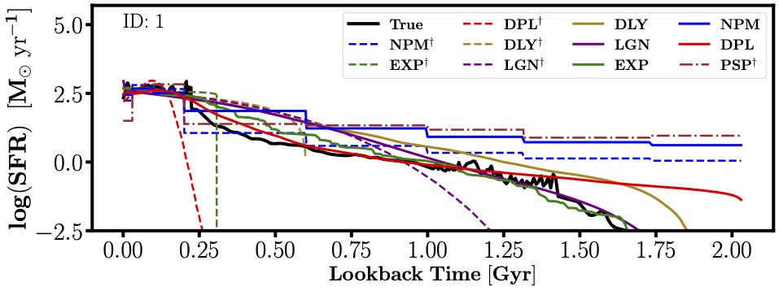
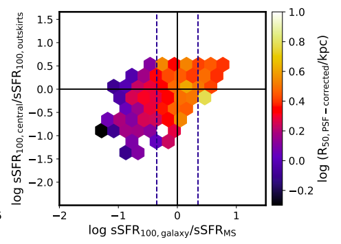
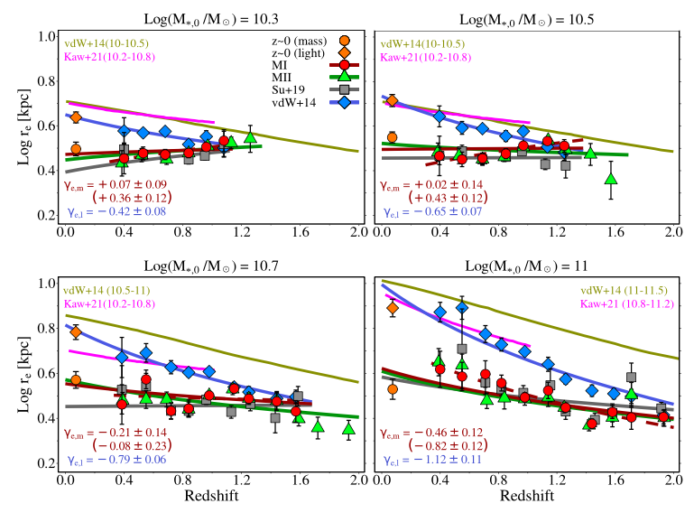
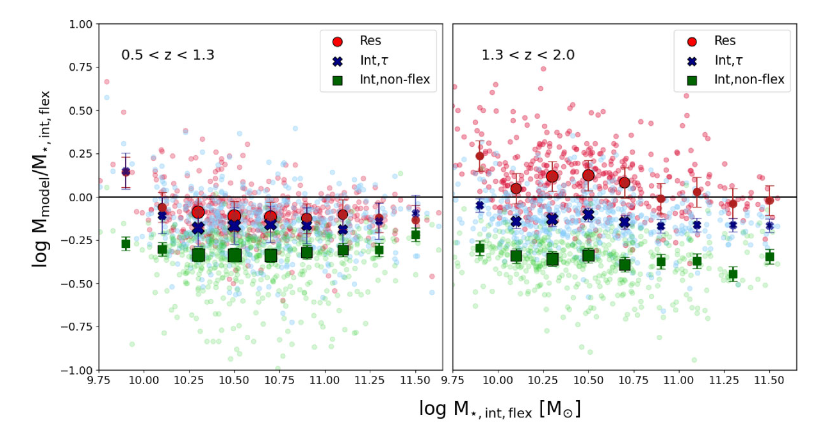
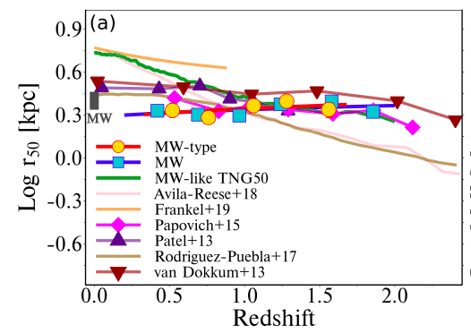
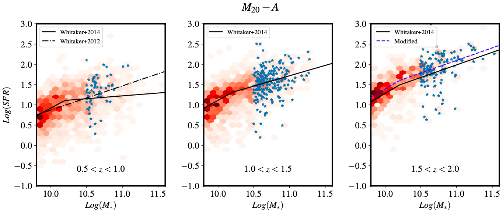
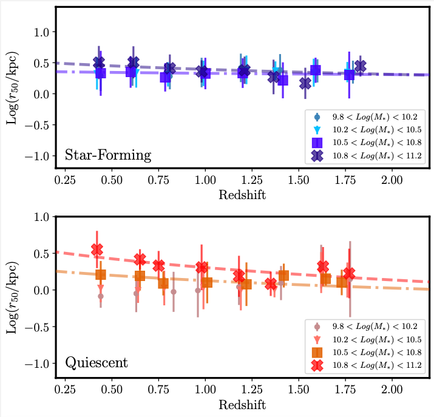
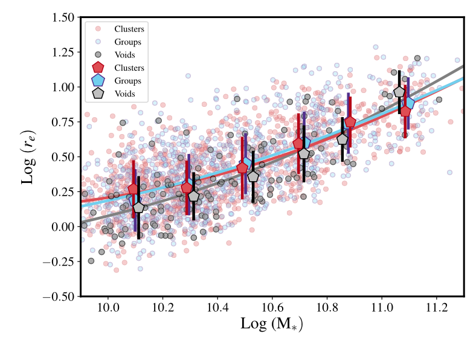
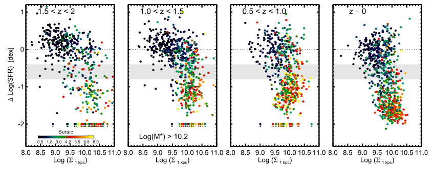

Moein Mosleh, Mohammad Riahi-Zamin, Sandro Tacchella,
2025, ApJ,
983, 181
We compare pixel-by-pixel parametric and nonparametric
star-formation history models for high-redshift galaxies,
highlighting how different assumptions affect our understanding of
quenching and hidden star formation.


Shweta Jain, Sandro Tacchella, Moein Mosleh,
2024, Open Journal of
Astrophysics
This study shows how galaxies grow in size in a
self-regulated manner while remaining on the star-forming main
sequence, linking star-formation activity to structural
evolution.ّ
Maryam Hasheminia, Moein Mosleh, S. Hosseini-ShahiSavandi, Sandro
Tacchella,
2024, ApJ, 975, 252
We track the buildup of stellar
mass in galaxies since z ~ 2, demonstrating inside-out growth as a
dominant evolutionary mode for massive star-forming systems.


Shweta Jain, Sandro Tacchella, Moein Mosleh,
2024, MNRAS, 527,
3291
By analyzing galaxies at the pixel scale, we argue for the
need for more flexible SFH models that can capture the complexity
of galaxy formation and evolution.
Maryam Hasheminia, Moein Mosleh, Sandro Tacchella, S.
Hosseini-ShahiSavandi, Minjung Park, Rohan Naidu,
2022, ApJL, 932,
L23H
We find that Milky Way–like galaxies show little to no
evolution in their half-mass radii over the past 10 billion years,
challenging conventional views of galaxy size growth.


Moein Mosleh, S. Hosseini-ShahiSavandi,
2022, Iranian Journal of
Physics Research, 2, 482
This work explores how galaxy mergers
influence star-formation activity by analyzing stellar mass maps
with spatial resolution.
Moein Mosleh, Shiva Hosseinnejad, Zahra Hosseini-Shahisavandi,
Sandro Tacchella,
2020, ApJ, 905, 107M
We measure galaxy sizes
based on stellar mass distributions rather than light, revealing
new insights into how galaxy structure evolves with time.


Moein Mosleh, Saeed Tavasoli, Sandro Tacchella,
2018, ApJ, 861,
101
We study how the stellar mass profiles of quiescent galaxies
vary with environment, probing environmental effects on galaxy
structure in the nearby universe.
Moein Mosleh, Sandro Tacchella, Alvio Renzini, Marcella Carollo,
Alireza Molaeinezhad, Masato Onodera, Habib Khosroshahi, Simon
Lilly,
2017, ApJ, 837, 2
This paper links the buildup of central
stellar mass to the quenching of star formation, establishing a
connection between mass distribution and galaxy transformation
over cosmic time.
